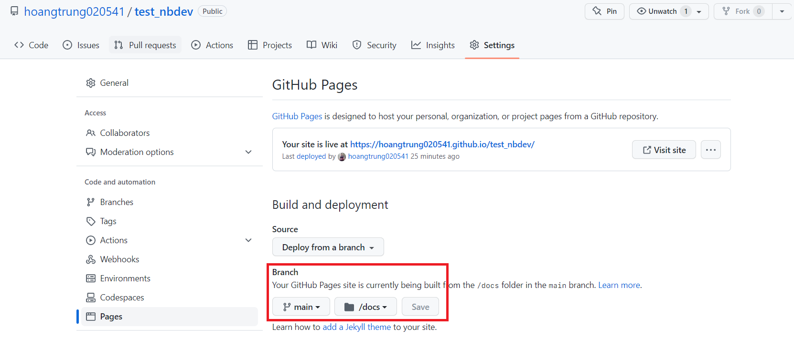
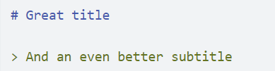
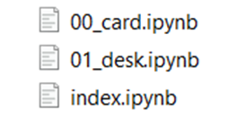
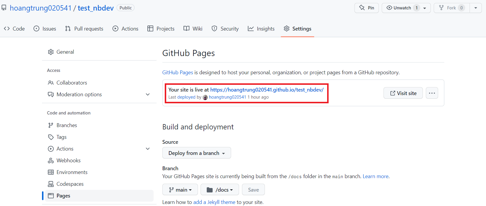
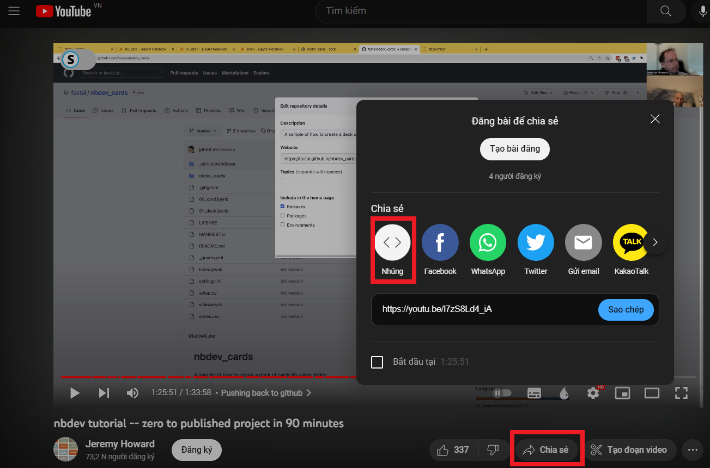

Create And Edit Page
Chi tiết cách tạo page trên Github và edit page bằng Markdown
1. Create page
Sau bạn đã khởi tạo nbdev trên repository của mình bằng command nbdev_new, bạn nên setup một vài thông tin như sau để cho việc push code lên Github Page trở lên thành công hơn:
Trên local: Bạn hãy sửa filesettings.inibằng cách thay đổidoc_path=_docsthànhdoc_path=docs. Sau đó vô folder.github/workflows, mở filedeploy.yamlvà sửabranches: [ "main", "master" ]thành branch bạn đang làm việc với nbdev.
Trên Github Page: Tại repository bạn hãy nhấp vàoSetting > Pages > Branch, tại đây hãy chọn branch mà bạn đã set trên local, thay đổi/(root)thành/docsvà ấn save. Sau khi đã setup xong mọi thứ, bạn có thể viết page thông qua file notebook
.ipynbtrong foldernbs. Tại mỗi file notbook bạn nên bắt đầu với cell đầu tiên bằng một title (# title) và một subtitle (> subtitle), title này sẽ được sử dụng để hiển thị ở sidebar trên page, ví dụ:
Đặt tên file notebook theo thứ tự, điều này sẽ khiến nội dung sidebar sẽ theo thứ tự bạn muốn. Trong đó theo mặc định, file
index.ipynbsẽ có thứ tự đầu tiên và là đóng vai trò làm file readme, ví dụ như sau:
Trước khi push lên github, bạn nên kiểm tra xem page có theo như ý muốn của bạn hay không bằng cách sử dụng command nbdev_preview để xem trước page trên local.
Để push repository lên Github Page, bạn hãy sử dụng các command trên terminal theo thứ tự sau:
nbdev_export
nbdev_prepare
nbdev_proc_nbs
nbdev_readme
nbdev_docs
git add .
git commit -m "message"
git pushCuối cùng, để xem page trên Github bạn hãy nhấp vào
Setting > Pagesnhư trong hình: 
2. Add image
- Để thêm image, bạn hãy sử dụng form
,ví dụ:


3. Add Video
Để thêm video, bạn hãy sử dụng form
[](link_video), ví dụ:
[](https://www.youtube.com/watch?v=l7zS8Ld4_iA)

Hoặc bạn có thể nhúng video bằng cách chọn video YouTube mà bạn muốn chèn vào, nhấn vào nút “Chia sẻ” và chọn “Nhúng” để lấy mã nhúng. Sau đó sao chép mã nhúng vào notebook
 Ví dụ: